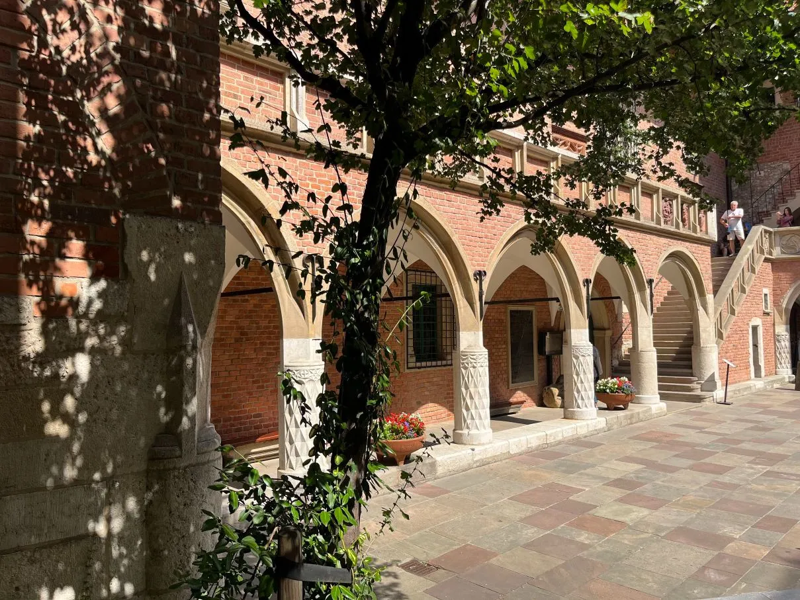
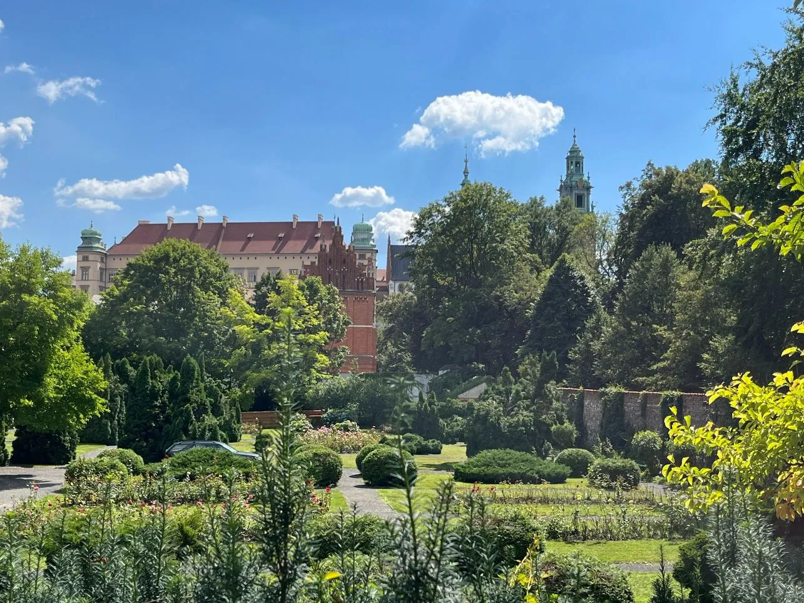

Sightseeing can indeed be tiring, especially on hot summer days. So, why not take a delightful little break in the serene, shady spots beneath the comforting embrace of trees? In the heart of Kraków, you'll discover some hidden (more or less) gardens that offer the perfect oasis for relaxation.
Wawel Royal Gardens
Historians have discovered that royal gardens existed between the eastern wing of the castle and the defensive wall since the 16th century. The first terrace once bloomed with the splendid Garden of Queen Bona, an elegant retreat fit for a queen, her daughters and queen's mansion. Below, on the next level,
the Garden of King Sigismund I the Old beckoned with its tranquil ambiance, providing a serene escape for the esteemed monarch. Today, gardens have been lovingly reconstructed, meticulously preserving the very species and techniques that graced the Renaissance era.
Tickets are available at the ticket office
Check on on Goggle Maps
Court of Collegium Maius

Actually it is not a garden (just one tree), but a bit hidden place with deep shadows under the arcades. The Collegium Maius, a remarkable example of Gothic architecture crafted from stone and brick, proudly stands as the oldest building within the University's premises. As you pass through the long vestibule, you'll find yourself transported back in time to the medieval era, surrounded by the echoes of the past. The entrace at Jagiellońska Street 15.
Admission is free
Check on on Goggle Maps
Garden next to the Archeological Museum

This is a historic garden of about 0.5 hectares, located in Krakow's Old Town at Poselska Street 3 at the foot of Wawel Hill. The garden was reconstructed in the late Renaissance checkerboard type. There is also a small inner garden in the former viridor.
Tickets available at the ticket office at the entrance
Check on on Goggle Maps
Mehoffer's garden
In times past, this particular corner of Krakow lay beyond the confines of the old city walls. What now stands absorbed by the city was once the domain of the Rudawa River, where the steady rhythm of mills and craft workshops echoed through the centuries. Suburban gardens added their own touch to the tapestry of life in this area. Back in 1932, the property found its way into the hands of the Polish painter Mehoffer. His touch transformed not only the place but the very essence of it.
The garden underwent a redesign, sculpted to reflect his vision. Today, the house stands as a museum, preserving the legacy of its former owner. Meanwhile, the garden blooms with an openness that welcomes the public. And nestled within this enchanting space, a charming café awaits, offering a cozy haven where relaxation becomes a delightful art.
Check on on Goggle Maps
Botanical garden

The Botanical Garden, though not precisely hidden, remains a wondrous haven where one can find solace and relaxation. Personally, I make it a point to visit this enchanting place every month, eager to witness the continuous evolution of blooming flowers and flourishing plants. Situated east of Kraków's Old Town, in the II Grzegorzki District at Copernicus Str. 27, this garden holds a history that stretches back to 1783, making it the oldest in all of Poland.
A true marvel, the Botanical Garden houses an astonishing collection of 5,000 species and varieties of plants, gathered from every corner of the world. Within its embrace lies the Arboretum, the park section of the garden, which proudly holds the largest collection of trees and shrubs. Among these remarkable specimens stands the awe-inspiring "Jagiellonian Oak," reigning majestically at approximately 230 years old.
The Botanical Garden offers a delightful array of beautiful corners to explore, each holding its unique charm. Don't miss the greenhouses, where an intriguing collection of tropical plants awaits, ready to transport you to far-off lands.
Tickets available at the box office at the entrance
Check on on Goggle Maps